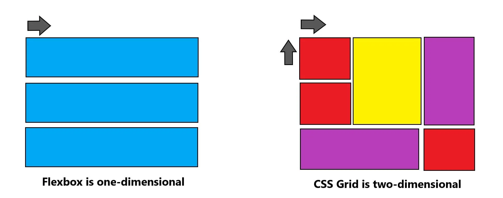

Css Grid
"Actualmente Css Grid es el framework más poderoso para realizar diseños, en cuanto a CSS se
refiere. Es un sistema bidimensional, esto quiere decir que se maneja con filas y columnas, esta
es la principal diferencia con Flexbox, ya que este trabaja con un sistema unidimensional, esto
quiere decir que usar CSS grid amplía nuestras posibilidades de desarrollo, ocupando
características para crear páginas con diseños que hacer un tiempo atrás parecían casi
imposibles(House, 2017,)" como se cito en
(Css Grid, 2019, p. 18)
Características de CSS Grid
Estructura tradicional de un documento html5.

(CSS From Scratch-part 4(Grid),2020).